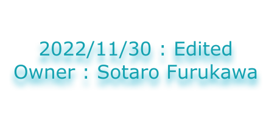

現在Linux KernelではほとんどがC/C++で記述されているが、C言語はメモリ周りのセキュリティが甘く、ポインタ関連の脆弱性がバグのほとんどを占めている。そこで、Unixコマンドをメモリ効率がよく、脆弱性が少ないRustで記述、構築していくことでより安全なシステムの構築を目指す。また同時に、Rustを使ってOSを作ることも視野に入れている。Rustで記述することにより、今まで以上にメモリ効率がよく、脆弱性のないOSを開発していきたいと考える。